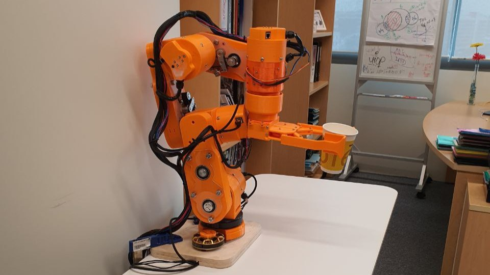

Adele Project
Tags: Mechatronics, Kinematics, Robotic Arm, Raspberry Pi, Electrical,
ROS

The aim of this project is to create a cost effective and user
friendly robotic arm for food preparing. For this project, I helped to
lead the team to solve issues with the previous robotic arm prototype
that was done by our seniors, assemble the electrical components of
the arm, and wire the electrical components together.